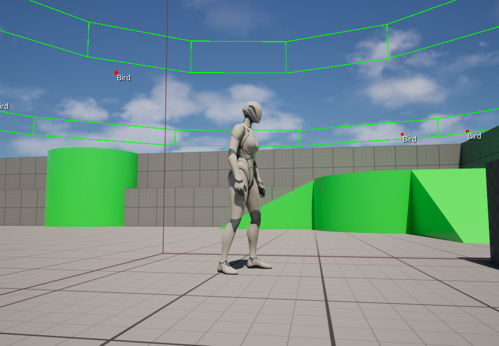
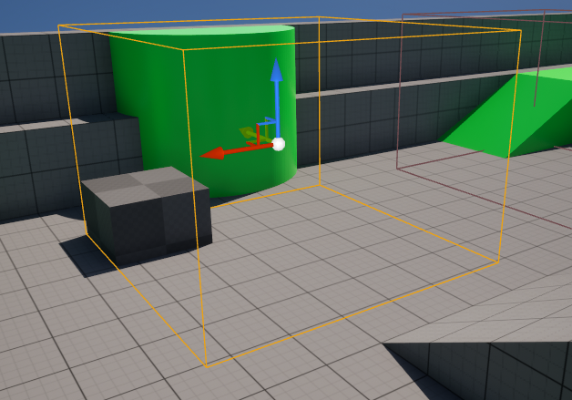

Unreal Engine · C++
Unreal Synthesis Project (2026)
Instructed by Professor Greg Dixon
Because of the project’s open-ended nature, I based my work on Unreal’s existing Soundscape plugin. I used the project to learn as much as possible about the process of making and designing a tool for another developer.
This project was developed entirely in Unreal using C++.

